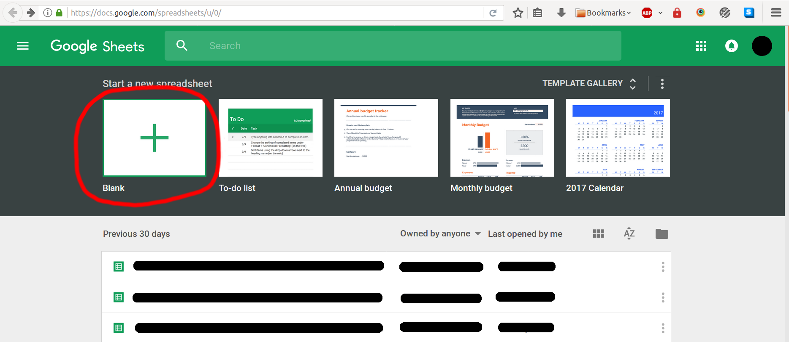
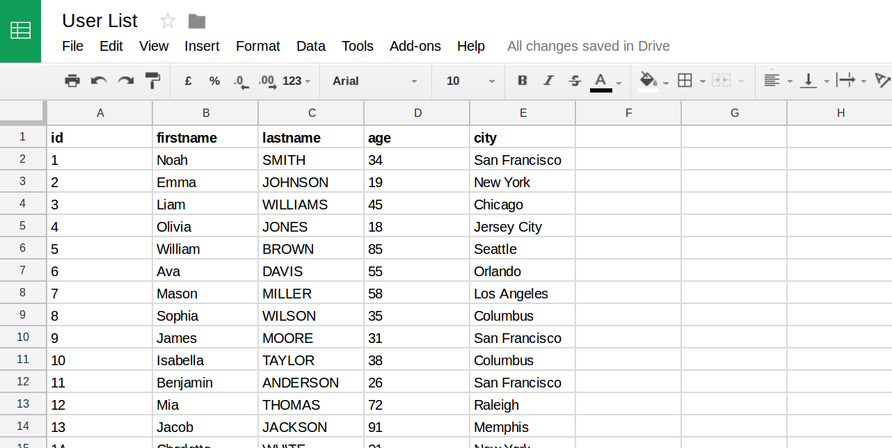
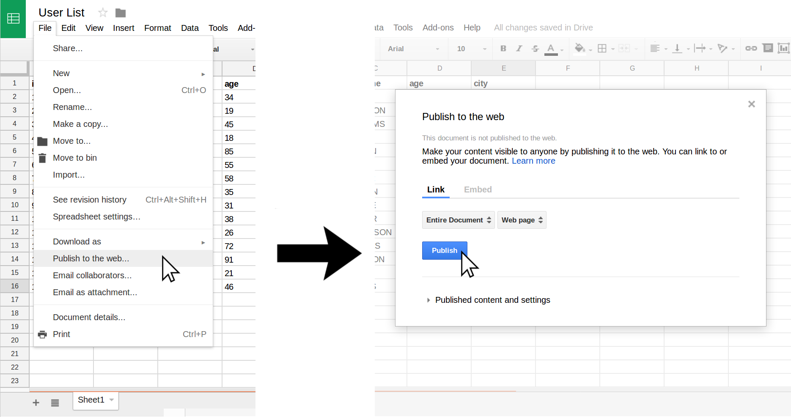
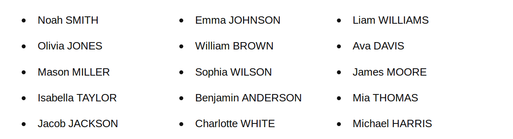
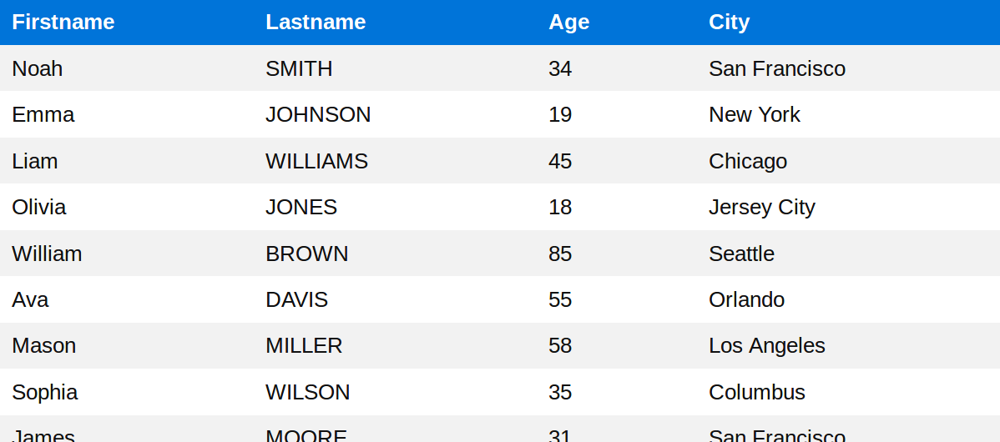
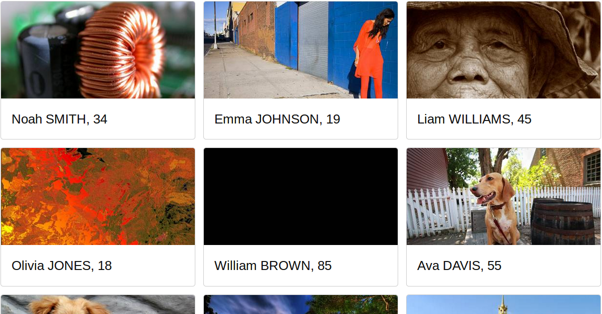
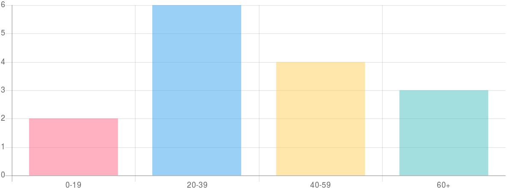
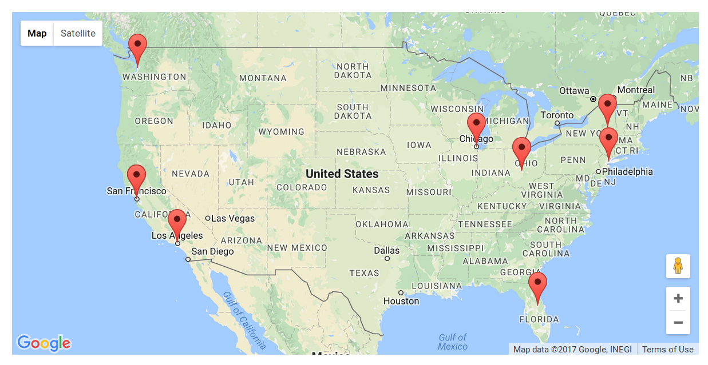

Tutorials
Spreadsheet database
In this tutorial you'll learn how to take a Google Spreadsheet and convert it into a small database for Node.js. We will see some possible applications such as graph statistics and geolocation.
This is useful for simple and small datasets that might be modified by non-technical people since everyone knows how to edit a spreadsheet. The data will then be available on the site as it is modified by several people simultaneously on Google Drive.
Some possible uses:
- Publish a graph with monthly revenue or users info that you are already using internally.
- Startup employee list is in a Spreadsheet for internal use and visible on the website.
- Keep track of your trips similar to how Martin does it (note: not related to server.js).
Create a spreadsheet
First we'll have to go to Google Spreadsheets and create a new Blank spreadsheet:

The spreadsheet has to have a specific structure, where the first row has the names of the columns and the rest has the content:

Now we have to publish the spreadsheet so that we can read it from our back-end. Press File > Publish to the web > Publish:

Finally make a note of the current spreadsheet URL. It will be something like this: https://docs.google.com/spreadsheets/d/1FeG6UsUC_BKlJBiy3j_c4uctMcQlnmv9iyfkDjuWXpg/edit
Installation
After getting your project started, we'll be using the packages server and drive-db:
npm install server drive-db
Back-end with server.js
Let's get to the code. Create the entry file index.js where the main logic will reside:
// Load the dependencies
const server = require('server');
const { render } = server.reply;
// The URL fragment between "spreadsheets/d/" and "/edit"
const id = '1FeG6UsUC_BKlJBiy3j_c4uctMcQlnmv9iyfkDjuWXpg';
const drive = require('drive-db')(id);
// Launch the server in port 3000
server(async () => {
// Local or remote (depends on the cache expiration)
const db = await drive.load();
// Render the index with the user data
return render('index.hbs', { users: db.find() });
});
Since this is a fairly simple back-end, everything you will need for the back-end is in this file. It loads the libraries, sets up a route and launches the server.
Front-end
Now let's do some fun stuff with the front-end. Create the file views/index.hbs with this basic structure:
<!DOCTYPE html>
<html>
<head>
<title>Spreadsheet Tutorial</title>
<link rel="stylesheet" href="https://unpkg.com/picnic@6">
<style>
main { width: 90%; max-width: 800px; margin: 30px auto; }
table, canvas, img { width: 100%; }
h2 { padding-bottom: 20px; }
.card { margin: 0; }
#map { height: 400px; }
</style>
</head>
<body>
<main>
<h1>Users</h1>
...
</main>
</body>
We added Picnic CSS to make it easier to develop, however you can use any front-end CSS library that you prefer like Bootstrap or write your own CSS. We will see several ways of representing our data next.
Simple list
The easy way, create a list with the first name and last name:

To achieve this we are using Handlebars with some {{#each ...}} looping:
<h1>Simple list</h1>
<ul class="flex one three-800">
{{#each users}}
<li>{{this.firstname}} {{this.lastname}}</li>
{{/each}}
</ul>
The classes on the <ul> come from Picnic CSS grid system.
Table
Let's show them in a table as they appear in the Spreadsheets:

If you already know the basics of HTML you'll have guessed this correctly, we are using the native <table> element to display it. First we set up the headers and then the content, again looping with an {{#each ...}} loop from Handlebars:
<table>
<tr>
<th>Firstname</th> <th>Lastname</th> <th>Age</th> <th>City</th>
</tr>
{{#each users}}
<tr>
<td>{{this.firstname}}</td>
<td>{{this.lastname}}</td>
<td>{{this.age}}</td>
<td>{{this.city}}</td>
</tr>
{{/each}}
</table>
Cards
Now let's try showing them as a group of cards such as Airbnb or Dribbble. This is a great way of showcasing creative content:

Our hbs code is a small grid system and some cards, each with its image and footer:
<h2>Cards</h2>
<div class="flex one three-900">
{{#each users}}
<div>
<div class="card">
<img src="http://lorempixel.com/400/200/?{{this.id}}">
<footer>{{this.firstname}} {{this.lastname}}, {{this.age}}</footer>
</div>
</div>
{{/each}}
</div>
In the real world those images would be stored somewhere, and the lorempixel link would still be pointing to the image reference. These card and grid styles come from Picnic CSS.
Demographics by age
Maybe you have a fairly longer dataset and want to group them by age and display this into a graph like the following:

First we will define where we want to include the chart. This will be a small HTML placeholder, since the chart library that we are using works with <canvas>:
<h2>Demographics by age:</h2>
<canvas id="people" width="800" height="300"></canvas>
For the main logic we will be using javascript. We need to include the library Chart.js and inject our users into the Javascript:
<script src="https://unpkg.com/chart.js/dist/Chart.bundle.min.js"></script>
<script>
// Create the variable and inject the different parts
var users = [
{{#each users}} {
id: {{{this.id}}},
firstname: "{{this.firstname}}",
lastname: "{{this.lastname}}",
age: {{this.age}},
city: "{{this.city}}",
}, {{/each}}
];
// ...
</script>
Now that we have the data, in the ... previously we will write our javascript code to create the chart:
// Get the place where the chart will be drawn
var ctx = document.getElementById("people").getContext('2d');
// Initialize the chart into a variable
var myChart = new Chart(ctx, {
type: 'bar',
data: {
// Group the data by age ranges by filtering those
labels: ["0-19", "20-39", "40-59", "60+"],
datasets: [{
data: [
users.filter(function(u){ return u.age < 20 }).length,
users.filter(function(u){ return u.age >= 20 && u.age < 40 }).length,
users.filter(function(u){ return u.age >= 40 && u.age < 60 }).length,
users.filter(function(u){ return u.age >= 60 }).length
],
backgroundColor: [
'rgba(255, 99, 132, 0.5)',
'rgba(54, 162, 235, 0.5)',
'rgba(255, 206, 86, 0.5)',
'rgba(75, 192, 192, 0.5)',
]
}]
},
options: {
legend: { display: false },
scales: { yAxes: [{ ticks: { beginAtZero: true } }] }
}
});
Demographics by location
Finally let's geolocate each user into a map:

First we have to create our html placeholder, where the Javascript will position the map. This time it will be a simple div with the id map:
<h2>Demographics by location:</h2>
<div id="map"></div>
Now we have to create the javascript variable users, see the previous point to find out how to do this. Then we create the map and position the markers:
function initMap() {
var map = new google.maps.Map(document.getElementById('map'), {
zoom: 4,
center: { lat: 39, lng: -100 }
});
var geocoder = new google.maps.Geocoder();
users.forEach(function(user) {
var newAddress;
geocoder.geocode({ address: user.city + ', United States' }, function(res){
var marker = new google.maps.Marker({
position: res[0].geometry.location,
map: map,
title: user.firstname
});
});
});
}
And finally we have to include Google Maps. You will have to include your own Google Maps API key here where it says YOUR_API_KEY:
<script async defer src="https://maps.googleapis.com/maps/api/js?libraries=places&key=YOUR_API_KEY&callback=initMap"></script>
This will call the function initMap() when the script is loaded, and effectively create your map with all of the markers.
Keep reading
Subscribe to our Mailchimp list to receive more tutorials when released:
Get Great Tutorials